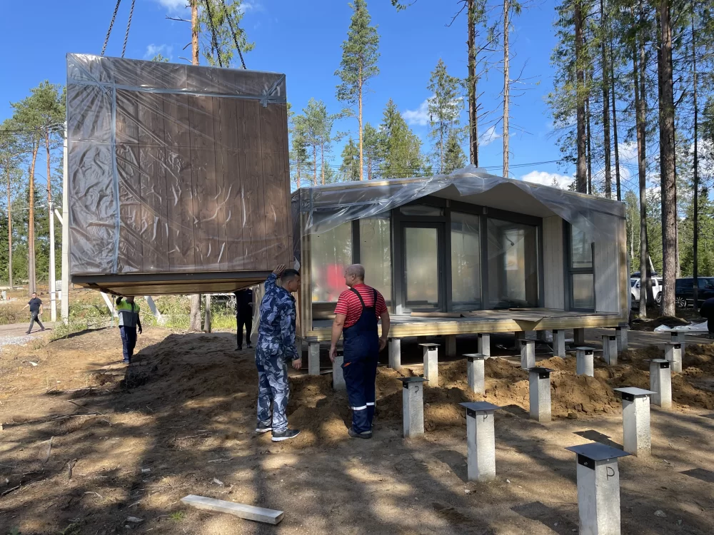
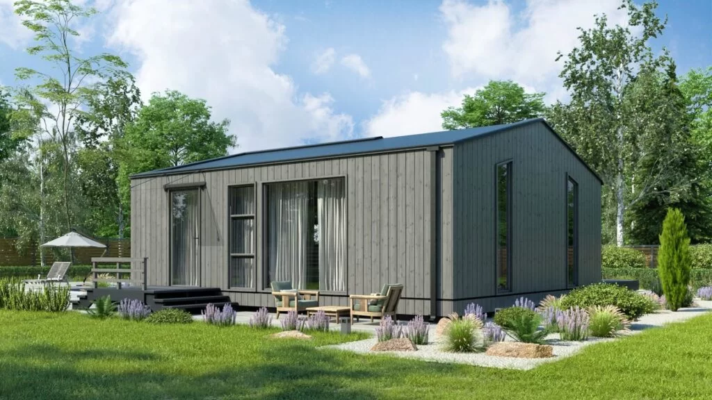
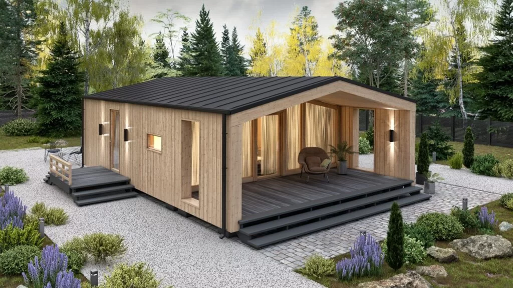
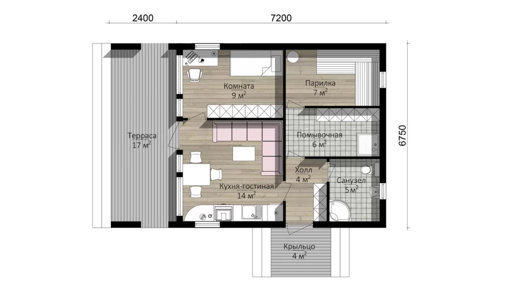
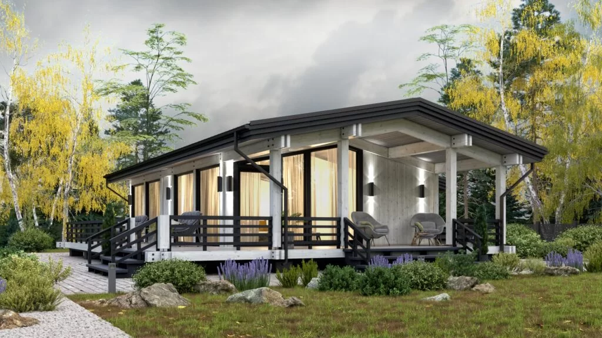
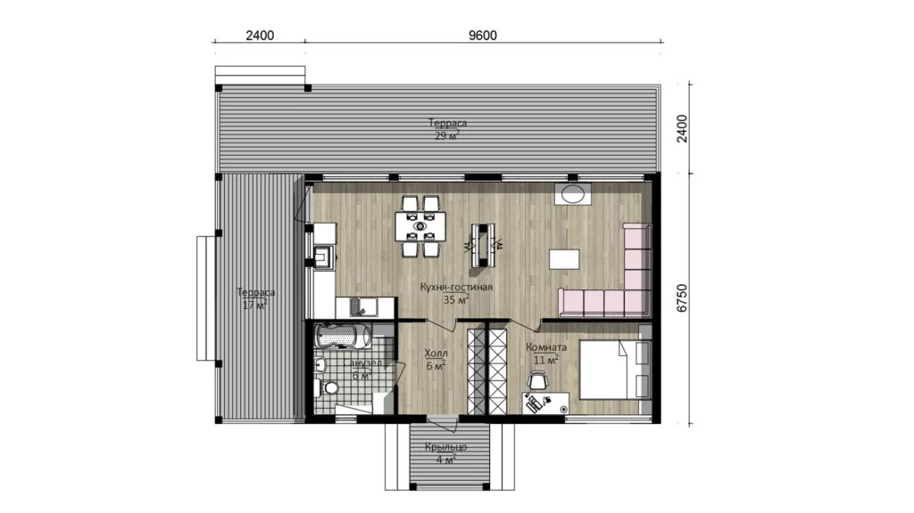

ТЕХНІЧНИЙ ОПИС МОДУЛЬНОГО КАРКАСНОГО БУДИНКУ
- -Підлога – балки 50х200 мм, утеплювач 200 мм, гідроізоляція, пароізоляція, чорнова підлога – OSB 18 мм, чистова підлога ламінат та плитка у санвузлі, низ підшитий оцинкованим листом, щоб уникнути проникнення гризунів.
- -Дах – односхилий або двосхилий, кроквяна система – дерев’яні балки 50х200 мм з кроком 600мм. Покриття даху (профнастил,фальц або рулонні матеріали), вітро-гідроізоляція, утеплювач 200 мм, пароізоляція, гіпсокартон або імітація бруса
- -Зовнішні стіни будинка. Каркас будинку із сухої деревини, з’єднання балок гвинтове. Балки 50х150 мм, зовнішня обшивка металевим сайдингом або імітація бруса 20 мм з вентиляційним зазором, вітро і волого-захисна мембрана, утеплювач 150 мм, пароізоляція, гіпсокартон або імітація бруса
- -Перегородки – із бруса 50х100 та 50х50 мм зі звукоізоляційними плитами та пароізоляційною плівкою.
- -Монтаж системи вентиляції – у стіні діаметром 100мм, клапан у колір фасаду.
- -Монтаж електричної проводки – приховане розведення кабелем ВВГ НГ перетином 3х1,5 та 3х2,5 у гофрі, з урахуванням монтажу щитка, розеток та вимикачів.
- -Монтаж каналізації та водопостачання – на вибір, прихований чи відкритий.
- -Вікна: склопакет у профілі з енергозберігаючим покриттям, зовні профіль ламінований, вікна відкриваються, забезпечуються регульованим клапаном провітрювання для забезпечення припливної вентиляції.
- -Вода: бойлер
- -Опалення: електрокотел
- -Фундамент: пальово-гвинтовий (геошуруп)
ОБРОБКА МОДУЛЬНОГО БУДИНКУ
Внутрішнє оздоблення модульного будинку не відрізняється від оздоблення будинків інших типів і може бути дуже різноманітним. Більшість оздоблювальних робіт виконується на виробництві, але є і ряд робіт, які роблять вже після складання на ділянці замовника і займають буквально 2-3 дні після монтажу.
ВИРОБНИЦТВО З ТЕХНІЧНИМ КОНТРОЛЕМ
Виробництво модульного будинку займає в середньому 1 місяць і здійснюється в сухому теплому ангарі під чітким технічним контролем, що забезпечує 100% якість каркасів і утеплення
ГАРАНТІЯ
Ми впевнені в якості наших будинків, тому ми даємо 5-річну гарантію на конструктив і 1 рік на обробку та приховані дефекти. При цьому термін експлуатації такого типу будинків – до 20 років.
ДОСТАВКА І МОНТАЖ ПО ВСІЙ УКРАЇНІ
Доставка модульного будинку здійснюється, як правило, на низькорамних платформах, що дозволяє забезпечити висоту модульного будинку 3 метри. Ширина одного модуля зазвичай дорівнює 2,5 метрам, але її можна збільшити до 3,5 метрів, що також спричинить подорожчання доставки.
ЯК ВИКОРИСТОВУЮТЬСЯ ГОТОВІ МОДУЛЬНІ БУДИНКИ?
Готовий модульний будинок економить один із найголовніших ресурсів – час. Дає можливість швидко переїхати за місто або відкрити рентабельний бізнес у сфері туризму
Будинок для турбази або глемпінгу
Будинки для "відпочинку вихідного дня" можуть бути невеликими, але, абсолютно точно, повинні бути комфортними, фотогенічними та зносостійкими. А ще вони мають бути недорогими та швидко вводитися в експлуатацію для виходу на окупність, адже це бізнес.
Будинок на час будівництва основного
Основний будинок може будуватися 1-2 роки, а проводити час за містом у вихідні хочеться вже зараз. Модульний будинок є відмінним рішенням, згодом його можна залишити як гостьовий або продати .
 Хоум-офіс + гостьовий будинок
Нині багато робочих завдань можна вирішувати віддалено. Не завжди вдається створити комфортне робоче місце в існуючому будинку і окремий будинок з усіма умовами може стати чудовим варіантом створення спокійного робочого простору.
У вихідні будинок можна використовувати для відпочинку рідних чи друзів, що приїхали в гості.
 